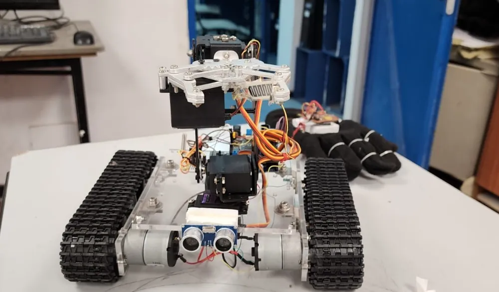
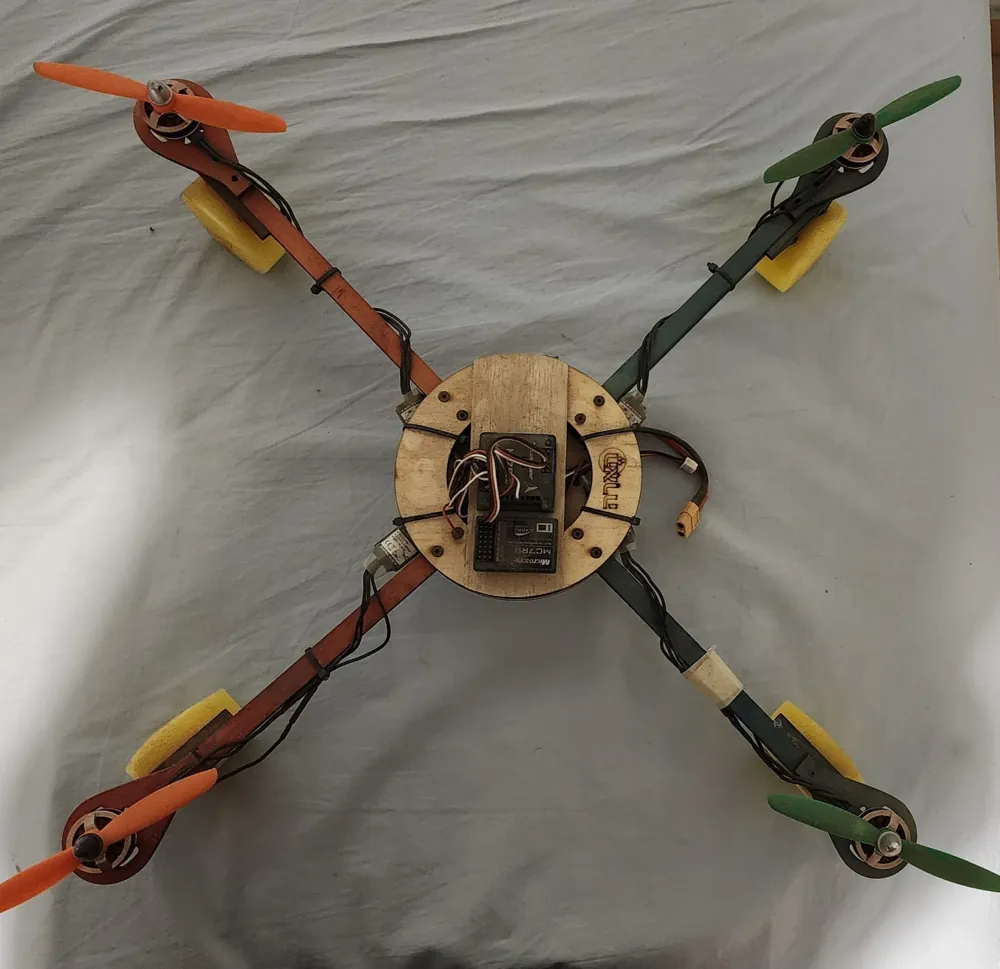

Computational biology
Using algorithms, statistics and machine learning to make sense of biological data.
Open to student positions & internships
Bioinformatics student at Tel Aviv University and full-stack developer. I work where computer science meets biology, building everything from clustering algorithms in C to real-time web apps and robots.
01 · about
I'm a 21-year-old, third-year student in the combined Bioinformatics program (Computer Science & Life Sciences) at Tel Aviv University. I started out on the single-major Computer Science track, completing its core mathematics and programming curriculum, before moving to bioinformatics to apply algorithms and data to biological questions.
Outside of class I build things: full-stack web applications with real-time features, high-performance numerical code bridging Python and C, and robotics and IoT hardware. I like taking a project from first sketch all the way to a working implementation.
I learn fast and on my own. Most of what I know about web development, I taught myself through courses, books and lots of projects.
Using algorithms, statistics and machine learning to make sense of biological data.
Efficient data structures, complexity analysis and fast native code.
Designing and building complete web apps, from the database to the UI.
Arduino, sensors, drones and RC planes. I enjoy building physical things too.
02 · education
Tel Aviv University · Computer Science & Life Sciences
A combined program that pairs a full computer science foundation with molecular biology, genetics and life sciences. Relevant coursework:
Torah U-Mada High School, Kfar Saba
Advanced majors, all with honors: 10-unit Electronics; 5-unit Computer Science, Mathematics, Physics and English.
03 · projects
Things I've designed and built, from algorithms to hardware.
Full-stack · Independent
A full-stack blogging platform built like a social network. Users create blogs and posts, comment, follow view counts and message each other in a real-time chat over WebSockets. I wrote a custom multi-user authentication system with hashed & salted passwords, a dark mode and a responsive UI, and organized the front end in an MVC pattern.
Algorithms · Tel Aviv University
A clustering algorithm based on Symmetric Non-negative Matrix Factorization, benchmarked against K-means. The heavy numerical work runs in C and is exposed to Python through the Python C API.
Data structures · Java
A complete Fibonacci Heap supporting all operations at optimal amortized complexity, plus an empirical study of how cascading cuts affect runtime, links and cuts under varying conditions.

Robotics & electronics · Final project
A tank with a robotic arm, controlled wirelessly by a smart glove I designed and calibrated from scratch. Two Arduino controllers talk over an HC-12 radio link, driving servo and DC motors. Ultrasonic sensors stop it from hitting walls, and force and flex sensors keep the gripper from squeezing too hard.
Front-end · Vanilla JS
A recipe search app that consumes a REST API, lets you bookmark recipes and upload your own. Built with an MVC architecture, local storage and OOP.

Hardware · Aerodynamics course
Built from a blueprint in a two-week course: frame, soldering every connection, then pairing and calibrating it over several test flights.
More on GitHub ↗
04 · skills
05 · experience
Aroma Espresso Bar
Aerodynamics club
06 · contact
I'm looking for student positions and internships in software development, bioinformatics and data. My inbox is always open.